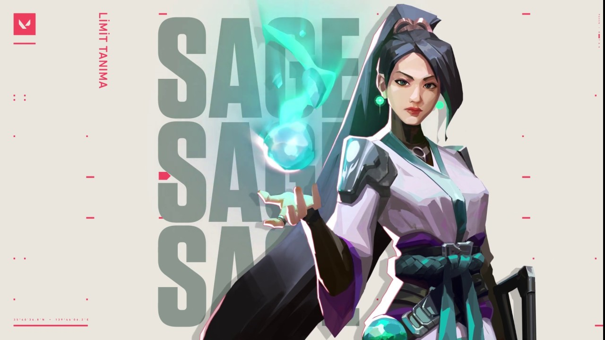

Ability 1(barrier orb)-This ability is a wall that can be put horizontally and vertically.It can be destroyed by anyone.U can use this to block off certain areas.This is very usefil to stop certain pushes.U can also use thiss wall to push urself.If u want to revive a teamate u can use this wall to protect them.
Ability 2(slow orb)-This ability is a orb that u throw and it turns into a slow fielding pit.People cannot run when they are on ur slow orb,their movement is also limited.But jett can dash.U can use this to stop pushes giving time for ur team to rotate.
Ability 3(healing orb)-This ability is basically a heal that can be used to heal your self or ur teamates.U just have to press left click to heal enemies and right click to heal urself.U can see a heart like symbol on ur teamates who have lost their hp,only then u can heal.
Ability 4(revive)-This ability is a revive as the name tells,u can revive ur teamates when their dead.When u press ur ult key,u have to go to a teamates corpse and press left click to revive them.U will see a green like essence around ur teamates bodies.When ur teamates get revived,there is an animation that prevents ur revived teamtate from shooting for a few seconds,so ur barrier orb would come in handy here.